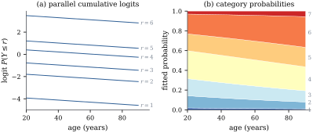

36.2 Cumulative logit models
Suppose the
36.2.1. Cutting the scale
The device that uses the ordering is to cut:
for each
for the cumulative probabilities,
with
Let
with cutpoints
Two conventions deserve comment. The intercept is not
in
36.2.2. The ordering constraint
Eq. 36.2.2
defines a probability distribution over the
If the slopes are common,
Proof. The category probabilities
are
Warning (What the constraint
costs). The proportional odds model is safe:
the constraint holds for every
36.2.3. Fitting
The cumulative link model is not a generalized linear
model in the strict sense of Definition 34.2.1:
the response is a vector and the parameters are shared
across its
Let
Proof. The inverse of
For Eq. 36.2.2 the
derivatives are immediate: writing
Remark (Why the fitting is well
behaved). Suppose the link density
Remark (Asymptotics, and what they rest
on). This is not the canonical-link generalized
linear model Theorem 34.5.1
is stated for, so that theorem cannot be quoted here.
What holds is the standard theory of maximum likelihood
in a smooth parametric model: suppose the model is
correctly specified and identifiable,
We do not prove it; treat it as imported. Its first two steps are those of Theorem 34.5.1 — a Lyapunov limit theorem for the score, which Proposition 36.2.2 exhibits as a sum of independent mean-zero terms, and a uniform quadratic expansion on compacts — but not its third, which used the global concavity of a canonical-link generalized linear model. For the classical treatment see van der Vaart (1998, chapter 5) or Lehmann and Casella (1998, chapter 6). Nothing here is exact in finite samples.
36.2.4. Where people place themselves
The 1996 American National Election Study asked 944
respondents to place themselves on a seven-point scale
from extremely liberal (
| age (decades) | education | income | |
|---|---|---|---|
| 0.0942 | 0.0276 | ||
| standard error | 0.0357 | 0.0395 | 0.0104 |
| 2.637 | 2.641 |
with cutpoints
Figure 36.2.1 shows what the fit says. Panel (a) plots the six fitted cumulative logits against age: exactly parallel lines, which is what a common slope means. Panel (b) differences them into the seven category probabilities, whose bands shift smoothly to the right as age increases and can never cross — the ordering constraint in picture form.

import numpy as np
import statsmodels.api as sm
from scipy import stats
NAMES = ["age (decades)", "education", "income"]
anes = sm.datasets.anes96.load_pandas().data
y = anes["selfLR"].astype(int).to_numpy() # 1 = extremely liberal ... 7 = extremely conservative
X = np.column_stack([anes["age"] / 10.0, anes["educ"], anes["income"]])
n, p = X.shape
c = 7
Y = np.zeros((n, c))
Y[np.arange(n), y - 1] = 1.0
print("category counts:", Y.sum(axis=0))The fitting routine below is Eq. 36.2.4
written out, with any subset of the regressors allowed
cut-specific slopes through the argument
free. Empty, it is the proportional odds
fit; the other settings are for Section 36.3.
def cum_gamma(psi, X, c, free):
"""Cumulative probabilities Lambda(theta_r - x^T beta_r) and their gradients.
psi = [theta (c-1), beta (p), delta ((c-2) x len(free))]; the columns of X listed
in `free` get cut-specific slopes beta_r = beta + delta_r, with delta_1 = 0.
"""
n, p = X.shape
q, nf, fl = len(psi), len(free), list(free)
theta, beta = psi[:c - 1], psi[c - 1:c - 1 + p]
delta = psi[c - 1 + p:].reshape(c - 2, nf)
G = np.empty((n, c - 1))
dG = np.zeros((n, c - 1, q))
for r in range(c - 1):
beta_r = beta.copy()
if r >= 1 and nf:
beta_r[fl] = beta_r[fl] + delta[r - 1]
g = 1.0 / (1.0 + np.exp(-(theta[r] - X @ beta_r)))
lam = (g * (1.0 - g))[:, None] # the logistic density at the cut
G[:, r] = g
dG[:, r, r] = lam[:, 0]
dG[:, r, c - 1:c - 1 + p] = -lam * X
if r >= 1 and nf:
off = c - 1 + p + (r - 1) * nf
dG[:, r, off:off + nf] = -lam * X[:, fl]
return G, dG
def cum_probs(psi, X, c, free):
"""Category probabilities pi_ir and their derivatives D[i, r, k] = d pi_ir / d psi_k."""
G, dG = cum_gamma(psi, X, c, free)
P = np.diff(np.column_stack([np.zeros(len(X)), G, np.ones(len(X))]), axis=1)
D = np.concatenate([dG[:, :1, :], np.diff(dG, axis=1)], axis=1)
return P, D
def cum_score(psi, X, Y, c, free):
"""Score and expected information of the multinomial likelihood."""
P, D = cum_probs(psi, X, c, free)
Pm = P[:, :c - 1]
Sigma = np.einsum("ir,rs->irs", Pm, np.eye(c - 1)) - np.einsum("ir,is->irs", Pm, Pm)
A = np.linalg.solve(Sigma, D) # Sigma_i^{-1} D_i, one observation at a time
U = np.einsum("irk,ir->k", A, Y[:, :c - 1] - Pm)
J = np.einsum("irk,irl->kl", D, A)
return U, J
def cum_loglik(psi, X, Y, c, free):
P, _ = cum_probs(psi, X, c, free)
return float(np.sum(Y * np.log(np.clip(P, 1e-300, None))))
def cum_fit(X, Y, c, free=(), tol=1e-10, maxit=100):
"""Fisher scoring for the cumulative logit model."""
n, p = X.shape
psi = np.zeros((c - 1) + p + (c - 2) * len(free))
psi[:c - 1] = np.linspace(-1.5, 1.5, c - 1) # start from ordered cutpoints, no slopes
for it in range(1, maxit + 1):
U, J = cum_score(psi, X, Y, c, free)
step = np.linalg.solve(J, U)
psi = psi + step
if np.max(np.abs(step)) < tol:
break
return psi, J, it
psi, J, iters = cum_fit(X, Y, c)
theta, beta = psi[:c - 1], psi[c - 1:]
se = np.sqrt(np.diag(np.linalg.inv(J)))
ll_po = cum_loglik(psi, X, Y, c, ())
print("cutpoints", np.round(theta, 4))
for j, name in enumerate(NAMES):
print(f"{name:>16s} {beta[j]:8.4f} ({se[c - 1 + j]:.4f}) z = {beta[j] / se[c - 1 + j]:6.3f}")
print(f"log-likelihood {ll_po:.4f} after {iters} Fisher scoring steps")The script checks the fit, cutpoint by cutpoint,
against the OrderedModel routine of
statsmodels.
36.2.5. Choosing the link
The three links of Definition 36.2.1
are close over the middle of the probability range and
differ in the tails, as in the binary case (Proposition 35.2.1).
Two things are specific to ordinal data. First, the
direction of the scale is arbitrary.
Relabelling the categories in reverse order maps the
logit and probit models to themselves with
Second, the complementary log-log link has an
interpretation the others lack. With
so the regressors act multiplicatively on the cumulative hazard of the underlying scale: the grouped-data version of the proportional hazards model of Cox (1972). If the ordered categories are intervals of a survival time, reach for it.
36.2.6. Exercises
A. Check your understanding
Verify the claim that reversing the category order
maps the cumulative logit model to itself with
Solution. Let
B. Practice
Show that in the proportional odds model the maximum
likelihood estimate automatically satisfies
Solution. The likelihood is defined
only where Eq. 36.2.3
holds, and
The cumulative logit model is unchanged if the latent
scale is multiplied by a positive constant
Refit Example (A seven-point scale)
after collapsing the seven categories into three (
Solution. The estimates from the
three fits are
C. Going deeper
Suppose an underlying continuous response